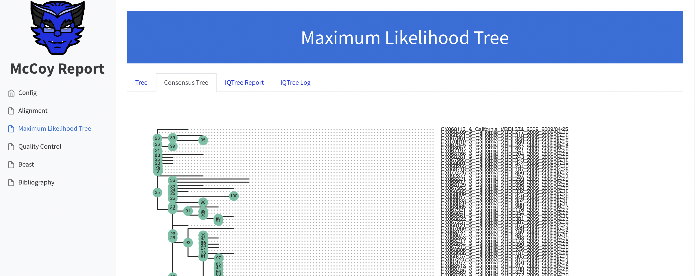

Quickstart¶
Warning
This page is under construction!
Install McCoy¶
If you haven’t done so yet, install McCoy and Mamba following the installation instructions.
Create a project¶
A new project can be created using:
mccoy create <project_name> \
--reference <reference_fasta_file> \
--template <beast2_template_file>
Where <project_name>, <reference_fasta_file>, and <beast2_template_file> are replaced appropriately.
A new directory will be created with the following contents:
├── config.yaml # <- A configuration file, used to tweak the
│ # parameters of each step in the pipeline
├── resources
│ ├── reference.fasta # <- Copy of the reference genome
│ └── template.xml # <- Copy of the Beast2 template
│
├── runs # <- An empty directory where runs will be stored
└── tests.py # <- Bare-bones quality control test suite
Configure your project¶
Due to the large diversity in possible phylodynamic analyses, you will almost
certainly need to customise the McCoy project to fit your needs.
McCoy has been designed so that as much of that customisation as possible can
be made using the project config.yaml or command line arguments.
The default config file looks something like this:
1 2 3 4 5 6 7 8 9 10 11 12 13 14 15 16 17 18 19 20 21 22 23 24 25 26 27 28 29 30 31 32 33 34 35 36 37 38 39 40 41 42 | |
Let’s break down some of the key sections…
The first block is called all and applies to all rules in the workflow.
threads_max allows setting the absolute maximum number of threads / cores
used by any single rule on a single machine, regardless of what is available.
If you are running on an HPC system and want to make use of nodes with more
than 64 cores then you may want to raise this value.
Warning
When discussing “threads” and “cores”, we attempt to remain as close to the definitions of Snakemake as possible. However, the Snakemake definitions can be quite confusing and the meaning of “thread” changes depending on the context (e.g. running on a cluster or locally). If in doubt, we recommend always treating a “thread” as a physical cpu-core unless you have a specific reason not to and know what you are doing. This is the default definition in McCoy.
When running on an HPC cluster, you can also use update_default_resources
to set defaults for the requested resources of all of your jobs. This is very
useful to, for example, set the default account to which your resource usage
will be charged:
update_default_resources:
- account='proj00577'
After this, we have one block for each rule of the workflow with config
options: align, tree, and beast. See the
documentation for each of these rules for information.
One key parameter which you will see repeated is threads. When running
locally, this corresponds to the maximum number of CPU cores allocated
(remembering that we will never exceed all.threads_max). This value will
automatically be adjusted to the total number of cores available on the machine
if more than that number is requested. When running on an HPC cluster, McCoy
uses threads to set the SLURM cpus-per-task value [[1]]. For more
information about running McCoy on HPC systems, check out the HPC page.
Run the McCoy workflow¶
Now that your project is configured, it’s time to run the McCoy workflow:
mccoy run <project_dir> --data <fasta_file>
All results will be stored in <project_dir>/runs/run_1.
To see all of the available options for the mccoy run command use:
mccoy run --help
A few notable options include:
--inherit&--inherit-lastThese will be discussed in the following section.
--configThis allows overriding the values set in the
config.yamlfile. For example--config='all.update_default_resources=["account=proj00577"]'.
--hpcRun McCoy by submitting jobs to an HPC SLURM scheduler. See the Running on HPC page for more info.
Important
Any options or arguments not listed in mccoy run --help are forwarded
on to Snakemake. This provides power-users with the ability to fully tailor
how the workflow runs.
Check the results¶
Upon the successful completion of a run, McCoy will generate an html report with a number of results and diagnostics from each stage of the workflow.
Updating a run with new data¶
One of the key features of McCoy is the ability to add new sequences and continue from the results of a previous run, without starting from scratch. This is achieved using online-BEAST.
To inherit the results from the last run of McCoy, simply use:
mccoy run <project_dir> --data <new_sequences_fasta> --inherit-last
To inherit from a different run:
mccoy run <project_dir> --data <new_sequences_fasta> --inherit <project_dir>/runs/run_<N>